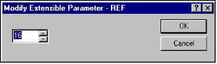
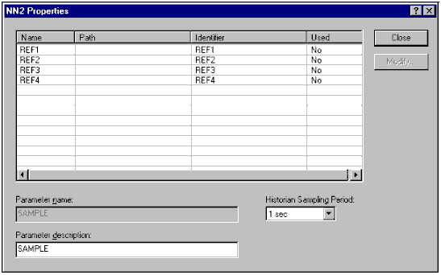
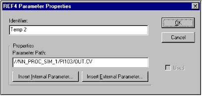

Neural Network function block configuration
Any change in the block configuration requires that you reconnect to the block from the Neural application for the change to be reflected in the block's behavior.
Implementing a neural network to model a process output requires that you create a module that contains a Neural Network function block. The tasks required are:
Create the module in Control Studio.
Specify the number of process inputs.
Assign the process output to model to the Sample input of the NN function block.
Connect the SAMPLE input to a Lab Entry or an Analog Input function block, depending on whether the parameter to be estimated is currently only available through offline lab analysis or is periodically measured using an online sampled analyzer.
Define process inputs to the model.
Specify the Historian Sampling Period.
Note:Set the Historian Sampling Period only from the Properties dialog of the NN function block. Do not use the History Collection dialog.
Save the module and download it to the controller.
Verify that the transmitters that provide the inputs are working correctly.
Make sure the Continuous Historian is enabled, the area containing the module has been assigned to the Continuous Historian, and that the Continuous Historian has been downloaded.
Start the Neural application and connect to the NN block.
Select historical data and train the network.
Download the trained network to the controller.
Use the DeltaV Neural application to train, test, and download your network model.
Defining process inputs
Because the number of inputs to a neural network can vary, the NN function block uses extensible parameters for process inputs. After you decide which process inputs may affect the process output you are modeling, right-click the NN function block, and select Extensible Parameters. The following dialog appears:

Use the spin buttons to enter the number of extensible parameters you need for the number of process inputs you are using, and then click OK. You can configure as many as 20 variables as inputs to the Neural Network, but the model uses a maximum of 16 inputs. You (or the Neural application) eliminate variables when creating the model so that no more than 16 inputs remain.
Next, right-click the NN block and select Properties. The Neural Network block Properties dialog appears with default process input parameter information. The dialog also contains the modeled parameter (the process output that the network models) name and a default description. You can change the text in the Parameter Description field as needed.
Next, configure the Historian Sampling Period to define the rate at which the data is going to be stored in the Continuous Historian. The rate should correspond to the sampling period required by the fastest moving process input.

Use the Properties dialog to open the Parameter Properties dialog for all process inputs to configure the Neural Network's input parameters. Select a parameter and click the Modify button. The Parameter Properties dialog opens.

Use the Parameter Properties dialog to specify a valid parameter path and a unique identifier for each process input. Note that the path and identifier must be unique for each process input parameter. Also keep in mind that you cannot change the value in the Used field from either the Neural Network Properties or the Parameter Properties dialog. That field indicates whether or not the specific parameter is used in the neural network model assigned to the Neural Network block after training. Because the Neural Network is not trained yet, the Used fields default to No for all of the input parameters.
Only set the Historian Sampling Period from the Properties dialog of the NN function block. Do not use the History Collection dialog to set the sampling period.
After you make all of the required changes to the module, you can save and download the module to the DeltaV controller. You must also download the Continuous Historian for data to be historically trended.
When a module containing an NN block is downloaded, all inputs and outputs are assigned to the Continuous Historian. In the History Collection the INn parameters appear as IN_HISTCOLLn. (Only the INn parameters appear in Control Studio.)
If you have migrated and imported a Neural Network configuration from a pre-9.3 version of DeltaV software, the parameters in the History Collection dialog are named IN_ARRAY[n,1]. To take advantage of the data exclusion features in the software you must edit the History Collection to delete the IN_ARRAY[n,1] parameters and add the IN_HISTCOLLn parameters.